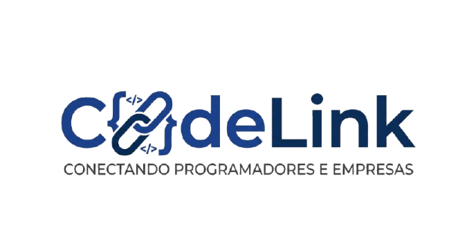

A CodeLink é uma organização digital fictícia concebida sob o ecossistema e setor de prestação de serviços digitais e intermediação corporativa tecnológica. Inspirada na dinâmica de inovação do filme "Os Estagiários", a empresa soluciona o gargalo de contratação técnica do mercado moderno. Atuamos diretamente ligando desenvolvedores autônomos a demandas urgentes de software de empresas de qualquer porte, centralizando portfólios, fluxos de validação de código e transações contratuais seguras dentro da nossa infraestrutura proprietária.

O alicerce estratégico corporativo que rege o comportamento sociocultural e operacional da equipe CodeLink.
Conectar o mercado corporativo global aos melhores talentos técnicos de forma ágil, transparente e desburocratizada, impulsionando e viabilizando a transformação digital de negócios através do trabalho colaborativo descentralizado.
Tornar-se a principal e mais confiável plataforma de intermediação e gestão de talentos de TI das Américas até o ano de 2028, transformando-se no padrão de mercado para contratações ágeis em tecnologia.
Inovação disruptiva contínua, transparência absoluta em negociações, rigor metodológico em segurança cibernética, inclusão social e diversidade nas frentes de engenharia de software e valorização do profissional autônomo.
Definição do Público-Alvo Corporativo: O ecossistema mercadológico da CodeLink é perfeitamente bifurcado de maneira a atingir com eficácia as duas frentes necessárias da plataforma. De um lado, como clientes contratantes, focamos em pequenas e médias empresas (PMEs), startups em fase de tração e consolidação, e laboratórios de inovação interna de grandes corporações que necessitam escalar suas squads de desenvolvimento sem arcar com encargos fixos e lentidão dos modelos CLT tradicionais.
Na outra ponta, como prestadores de serviços parceiros, acolhemos desenvolvedores de software fullstack, engenheiros de dados, designers de experiência do usuário (UI/UX) e especialistas em infraestrutura em nuvem (DevOps) que priorizam a flexibilidade geográfica e a autonomia financeira proporcionada pelas carreiras independentes.
Compreenda os pilares operacionais de nosso sistema digital corporativo de ponta.
Como Funciona a Plataforma CodeLink: O fluxo transacional inicia-se quando a empresa contratante publica um escopo detalhado de sua dor tecnológica no sistema. Automaticamente, nosso algoritmo proprietário de Inteligência Artificial realiza uma varredura preditiva em tempo real na base de dados, cruzando linguagens requeridas, nível de senioridade e avaliações prévias do portfólio dos freelancers. Em poucos minutos, um "Match Corporativo" é estabelecido, apresentando os três profissionais mais qualificados para o projeto, economizando semanas de processos tradicionais de Recursos Humanos.
Estruturação de portais corporativos complexos, e-commerces escaláveis e landing pages de alta conversão, unindo práticas avançadas de SEO e arquiteturas limpas.
Arquitetura e programação nativa ou híbrida para ambientes iOS e Android, focados em máxima performance computacional e fluidez de interface de usuário.
Auditorias técnicas, refatoração de códigos legados, otimização crítica de banco de dados relacionais e resolução especializada de falhas operacionais e bugs.
Gestão e deploy em ambientes de computação em nuvem, configuração de rotinas DevOps de integração contínua (CI/CD) e contenção ágil de brechas de segurança.
Diferenciais Competitivos de Mercado: O maior diferencial da CodeLink perante os concorrentes tradicionais do mercado reside em nossa curadoria técnica ativa e no uso de contratos automatizados com garantia escrow (retenção financeira de proteção). Diferente de outras plataformas abertas que sofrem com a falta de filtragem, cada desenvolvedor em nosso banco passa por testes práticos rigorosos de lógica de programação antes da aprovação do perfil, mitigando erros nas pontas contratuais.
Formas Oficiais de Comunicação com o Cliente: Para blindar a experiência corporativa, a CodeLink disponibiliza três canais integrados de contato: uma sala de chat e videoconferência criptografada nativa para reuniões de alinhamento técnico entre cliente e desenvolvedor; uma central de atendimento via tickets com Acordo de Nível de Serviço (SLA) de resposta humana de no máximo 4 horas úteis; e alertas automatizados via API estruturada de WhatsApp para notificar alterações cruciais no status do projeto.
Detalhamento de como nossa corporação gerencia a troca de mensagens, linguagens e dados interna e externamente.
A cultura corporativa interna adota rituais estritos de alinhamento utilizando o Slack segmentado por canais técnicos para mensagens instantâneas. A documentação institucional de processos fica concentrada no Notion (nossa Wiki corporativa). Reuniões gerais de metas da equipe interna acontecem mensalmente via Google Meet.
Gerenciada por comunicados oficiais à imprensa especializada (Press Releases) e pela publicação quinzenal de artigos de liderança de pensamento (Thought Leadership) produzidos pelos diretores no canal oficial da empresa no Medium, abordando o futuro do trabalho digital.
Atuação focada e segmentada. No LinkedIn mantemos um tom puramente formal, publicando cases de sucesso B2B para captar novos líderes corporativos. No Instagram e TikTok, a linguagem torna-se descontraída, focando na rotina de desenvolvimento e atração orgânica de talentos freelancer.
O e-mail atua como a ferramenta formal padrão para envios de documentação legal, relatórios de auditoria financeira e contratos assinados digitalmente. Implementamos fluxos automatizados de Inbound Mail para nutrição de leads corporativos que demonstraram interesse no serviço.
Adotamos uma abordagem Omnichannel híbrida altamente eficaz. O primeiro nível de triagem é conduzido por nossa inteligência artificial de conversação natural para dúvidas frequentes. Caso o problema exija mediação, o caso é repassado em menos de 5 minutos para nossa Ouvidoria Humana técnica.
Baseia-se em marketing de conteúdo profundo com otimização contínua de mecanismos de busca (SEO) para atrair tráfego qualificado de empresas. Paralelamente, executamos campanhas cirúrgicas de tráfego pago via LinkedIn Ads direcionadas exclusivamente para perfis de gerentes de tecnologia, CTOs e CEOs.
As diretrizes e compromissos éticos que guiam nossa conduta moral e o impacto que geramos na sociedade.
Operamos em total e irrestrita conformidade com a Lei Geral de Proteção de Dados (LGPD), utilizando criptografia ponta a ponta na proteção das informações sensíveis dos usuários. Nossa governança financeira é assegurada por contratos inteligentes que travam o pagamento do projeto em juízo digital (Escrow), garantindo a justa remuneração do freelancer e a segurança de entrega do contratante.
Criamos e mantemos de forma ativa o programa filantrópico CodeForGood. Através dessa iniciativa interna, a plataforma CodeLink abre mão de 100% de qualquer taxa de intermediação corporativa para projetos tecnológicos focados em Organizações Não Governamentais (ONGs) devidamente regulamentadas, fomentando o uso da tecnologia para fins sociais humanitários.
No pilar da **Sustentabilidade**, nossa plataforma funciona exclusivamente em servidores hospedados em nuvem ecológica com selo Green Hosting, operando com pegada de carbono auditada e totalmente neutra. Na frente da **Inclusão**, a CodeLink reinveste 5% de seu lucro operacional em um fundo anual de bolsas de especialização avançada em programação exclusivo para minorias sociais e pessoas em vulnerabilidade econômica.